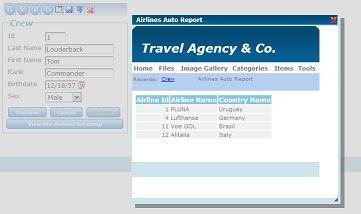

The Window data type allows opening an object or an external URL in a popup window. If the page called is in the same server as the caller page, the popup will be opened in modal status, which means that it blocks the parent application until the user closes it in any way. DescriptionTo open a popup window from any web object, a Window data type variable should be defined. Afterwards, some information must be indicated, such as an object (Web Panel, Transaction, HTTP Procedure) or a URL to be opened. The popup window will be opened in modal status (like GX prompts), except when the web page indicated to be opened is in a server other than that of the caller page. In such cases, a new window will be opened and both (caller and called) will be active. In addition, some properties are available in order to indicate size and position of the popup window Properties
ObjectWeb Object to be opened in the popup window. The supported object types are as follows:
The object is indicated using the Create command, i.e. using the following syntax:
If another object type is used to assign the Object property of a Window type variable, a specification error of the following types will be displayed.
URLIndicates a URL to be opened in the popup window. It admits any character value and assignment can be done using constants, attributes, variables or function results.
AutoresizeIndicates if the popup window will be resized to the web page content when opened. Possible values are true or false (Boolean). HeightIndicates the height of the popup window to be opened. This property is considered only if Autoresize = False. WidthIndicates the width of the popup window to be opened. This property is considered only if Autoresize = False. PositionIndicates the position of the popup window to be opened. Possible values are 1 (Absolute) or 0 (Centered) TopIndicates the top position of the popup window to be opened. This property is considered only if Position = 1 (Absolute) LeftIndicates the left position of the popup window to be opened. This property is considered only if Position = 1 (Absolute) MethodsOpenOpens the indicated web page in a popup window. The popup window will be opened in modal status, except when the web page indicated to be opened is in a different server than the caller page. In that case, a new window will be opened and both (caller and called) will be active. Considerations:
ExamplesThe following code:
Event 'OpenInformation'
&window.Object = AirlineList.Create()
&window.Open()
EndEvent
Will have the following behavior:  and the following code:
Event 'OpenGoogle'
&window.URL = 'http://www.google.com'
&window.Open()
EndEvent
The following behavior: As you can see, if the web page to be opened is in a different server from the caller page, the popup window is not opened in modal status (you can continue working in the caller page); in fact, a new browser instance is created. ScopeObjects: Web Panel object, Transaction object, Web Component object, Procedure object
|
| Backlinks | ||
| Data types list | Open Method | PopUp command |